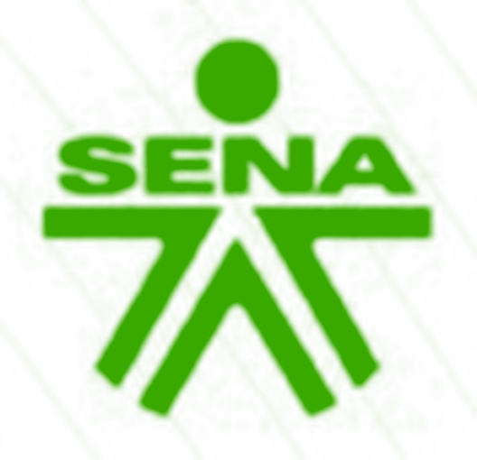
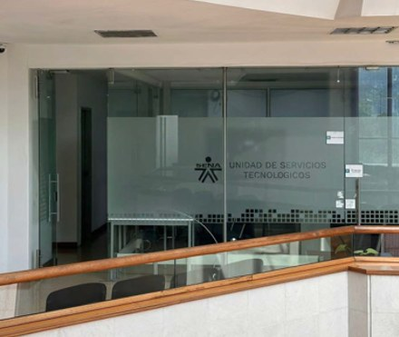
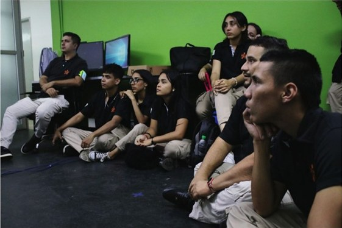
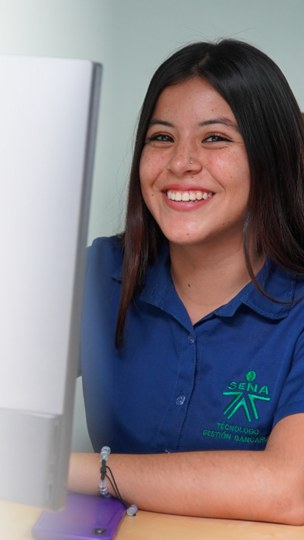
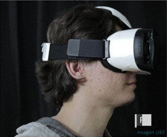

Desarrollo personalizado
Soluciones de software web y móvil eficientes, innovadoras y a la medida de cada cliente.
SENA · CESGE · Unidad de Servicios Tecnológicos
Arrastra para girar el logo · toca una pieza

> iniciando fábrica de software…
> cargando metodologías ágiles… OK
> compilando calidad… OK
> desplegando experiencia… OK
Desarrollamos soluciones digitales a medida y fortalecemos su calidad mediante metodologías ágiles, pruebas y conocimiento especializado.
La Unidad de Servicios Tecnológicos (UST) es un espacio dedicado a prestar servicios técnicos y especiales soportados en tecnologías emergentes, para fortalecer la transformación digital del país. Se articula con la formación, el programa de competitividad y desarrollo tecnológico productivo del SENA, la metodología de fábricas digitales y la estrategia de producción de centros.
Soluciones de software web y móvil eficientes, innovadoras y a la medida de cada cliente.
Un laboratorio de testing que acompaña todo el ciclo, no solo la entrega final.
Scrum, Kanban y TDD para entregar valor en ciclos cortos y mejorar siempre.
Aprendices en práctica, talleres y transferencias de conocimiento.

Desarrollamos soluciones de software web y móvil eficientes, innovadoras y personalizadas, que satisfagan las necesidades específicas de nuestros clientes, promoviendo la excelencia en la calidad, la agilidad en el desarrollo y la mejora continua de nuestros procesos.
Una iniciativa que permite reducir costos en licencias de software, fomentar la innovación y fortalecer el conocimiento técnico dentro de la organización.
Los ejercicios de transferencia de conocimiento, las visitas técnicas y los relacionamientos permiten vincular de forma continua a más actores, consolidando alianzas de cooperación y/o prestación de servicios en las áreas de nuestro portafolio.
Toca o enfoca un grupo para conocer su papel.
Elige una categoría o busca por nombre. Cada ficha explica el alcance y te lleva directo a una consulta por correo.
No encontramos servicios con esa búsqueda.
¿No sabes por dónde empezar? Cuéntanos tu necesidad →
Las fábricas de software del SENA implementan metodologías ágiles para garantizar la eficiencia en el desarrollo de productos.
Permite dividir el desarrollo en sprints cortos, con revisiones periódicas y entrega continua de funcionalidades.
Facilita la gestión visual del flujo de trabajo, identificando cuellos de botella y optimizando la producción.
Se basa en crear pruebas automatizadas antes de escribir el código, asegurando calidad y fiabilidad del software.
Distinguimos cuatro enfoques de prueba para que sepas exactamente qué necesita tu software.
La UST facilita espacio y equipos para la formación e imparte transferencias de conocimiento y talleres que complementan el proceso de aprendizaje e incentivan la investigación.

Aprendices de los programas de:


Las actividades formativas se presentan como participación y experiencia de aprendizaje; no constituyen convocatorias abiertas.
Indicadores UST · 2020–2024. Cifras de la Unidad de Servicios Tecnológicos; no corresponden exclusivamente a la Fábrica de Software.
Escríbenos y preparamos juntos la solución. Este formulario no guarda datos: arma un correo que envías desde tu propia cuenta.